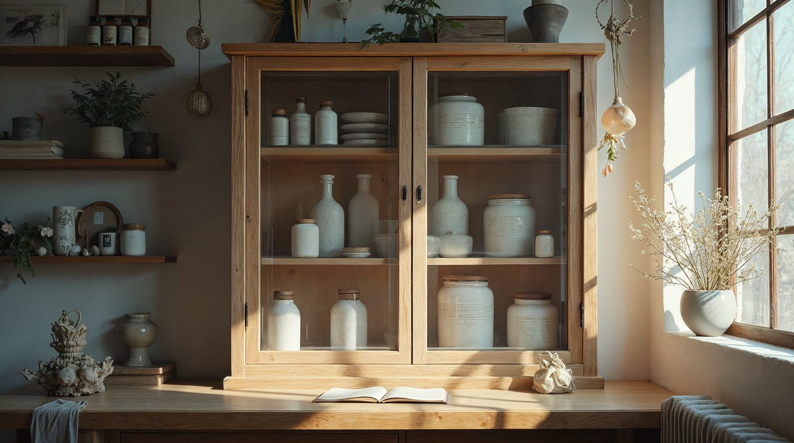
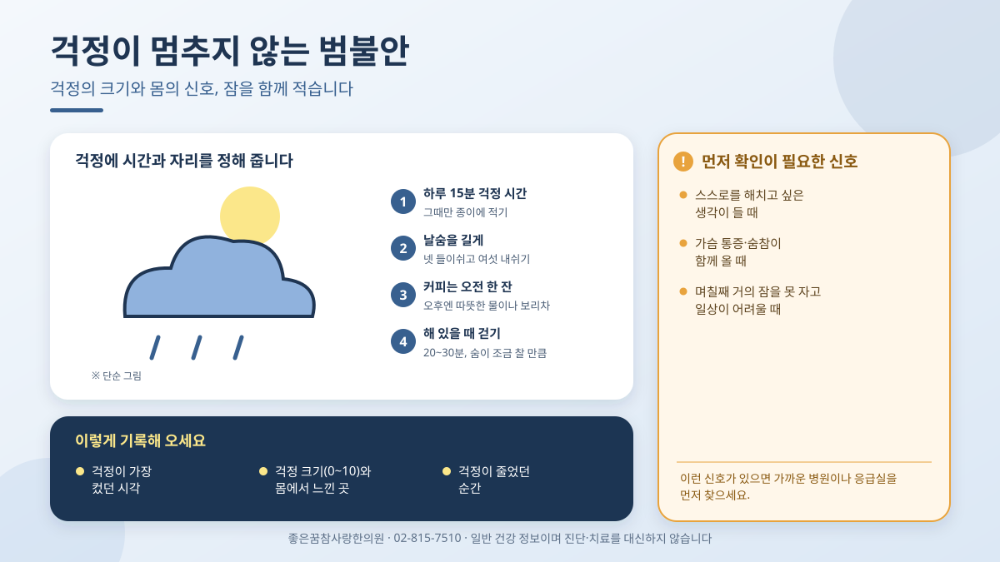

이종호 한의사 감수좋은꿈참사랑한의원 대표원장 (한의사 면허번호 19769)발행 2026-11-26 · 수정 2026-11-26
이 글의 차례
퇴근길 지하철에서 휴대폰을 열었다가 닫기를 몇 번이나 합니다. 아까 보낸 메일에 실수는 없었을까, 아이 학원 차는 제시간에 왔을까, 부모님 검사 결과는 괜찮을까. 하나를 겨우 내려놓으면 다른 걱정이 바로 그 자리를 채웁니다. 집에 도착해 신발을 벗을 즈음엔 어깨가 귀까지 올라가 있습니다.
진료실에서 이런 말씀을 자주 듣습니다. "딱히 큰일이 있는 것도 아닌데 마음이 늘 졸아 있어요." "걱정하지 말자고 다짐해도 머리가 혼자 돌아가요." 그 말을 듣고 있으면 그동안 얼마나 애쓰며 버텨 오셨을까 싶어 마음이 쓰입니다.
특별한 사건이 없어도 여러 가지 걱정이 몇 달째 이어지고, 그 걱정을 스스로 멈추기 어렵고, 몸까지 늘 긴장해 지치는 상태를 흔히 범불안이라고 부릅니다. 정신건강의학과에서 쓰는 이름으로는 범불안장애입니다.
성격이 예민해서 생긴 일이라고 혼자 탓하지 않으셨으면 합니다. 걱정이 많아진 데에는 대개 이유가 쌓여 있고, 그 이유는 생각보다 몸 쪽에도 많이 걸쳐 있습니다. 저는 이 글에서 걱정의 모양과 몸의 신호를 함께 펼쳐 보려 합니다.
왜 걱정이 멈추지 않을까요
걱정은 원래 우리를 지켜 주는 장치입니다. 내일 발표가 있으면 미리 준비하게 하고, 길이 미끄러우면 천천히 걷게 합니다. 문제는 이 장치가 꺼질 때를 잊어버릴 때입니다. 위험이 지나갔는데도 경보가 계속 울리는 것과 비슷합니다.
경보가 길게 울리면 몸은 늘 비상 상태로 지냅니다. 심장이 조금 빨리 뛰고, 근육이 굳고, 숨이 얕아지고, 소화는 뒤로 밀립니다. 이런 상태가 몇 주, 몇 달 이어지면 몸이 지치고, 지친 몸은 다시 작은 일에도 쉽게 놀랍니다. 그렇게 걱정과 긴장이 서로를 키우는 고리가 생깁니다.
잠이 이 고리의 한가운데에 있는 경우가 많습니다. 걱정 때문에 잠을 설치고, 잠이 모자라니 다음 날 마음의 여유가 줄어 걱정이 더 커집니다. 그래서 저는 불안 이야기를 들으면 거의 언제나 잠 이야기로 넘어갑니다.
커피, 에너지 음료, 늦은 밤 휴대폰도 고리를 조입니다. 카페인은 그 자체로 가슴 두근거림과 초조함을 만들 수 있어, 불안을 느끼는 분이 하루 몇 잔씩 드시는 경우 먼저 함께 줄여 보자고 말씀드립니다.
한의학에서는 이런 모습을 심(心)과 담(膽)이 허해 쉽게 놀라고, 생각이 많아 비(脾)가 지친 모습으로 설명해 왔습니다. 옛 의서에 나오는 '경계(驚悸)', '정충(怔忡)' 같은 말이 가슴이 두근거리고 불안한 상태를 가리킵니다. 이름은 달라도 걱정과 몸을 함께 봤다는 점은 지금과 같습니다.
보통의 걱정, 범불안, 공황은 어떻게 다를까요
누구나 걱정을 합니다. 시험 전날 잠을 설치거나 큰 결정을 앞두고 며칠 마음이 무거운 것은 자연스러운 일입니다. 걱정할 일이 지나가면 마음도 함께 내려앉는다면, 그것은 몸의 경보가 제 할 일을 하고 쉬는 모습입니다.
범불안에서는 걱정의 대상이 한두 가지가 아닙니다. 일, 건강, 가족, 돈, 사소한 약속까지 이것저것으로 옮겨 다닙니다. 하나가 해결되어도 마음이 쉬지 못하고 다음 걱정을 찾아갑니다. 흔히 쓰는 기준으로는 이런 상태가 여섯 달 가까이 이어지는지를 봅니다.
공황은 모양이 다릅니다. 갑자기 숨이 막히고 심장이 터질 듯 뛰고 이러다 죽을 것 같은 공포가 몇 분 안에 몰려왔다가 가라앉습니다. 범불안이 낮게 오래 깔리는 안개라면, 공황은 갑자기 몰아치는 소나기에 가깝습니다. 두 가지가 함께 있는 분도 있습니다.
기분이 가라앉고 흥미가 사라지는 우울감도 불안과 자주 겹칩니다. 걱정이 많은데 아침에 일어나기조차 힘들고 좋아하던 일이 시들해졌다면 우울감도 함께 살펴야 합니다. 어느 쪽이 더 앞에 있는지에 따라 이야기의 순서가 달라집니다.
몸의 병이 불안처럼 보이기도 합니다. 갑상선 기능이 높으면 가슴이 두근거리고 땀이 나며 초조해질 수 있고, 빈혈이나 부정맥, 저혈당에서도 비슷한 느낌이 올 수 있습니다. 그래서 처음이라면 내과 검사로 이런 원인을 먼저 확인해 보시길 권합니다.
예를 들면 이런 모습입니다
실제 어느 분의 사연이 아니라, 진료실에서 자주 보는 모습을 바탕으로 그려 본 장면입니다.
예를 들어 회사 일을 꼼꼼히 챙기는 직장인이라면 퇴근 뒤에도 업무 메신저를 몇 번이고 다시 열어 봅니다. 몸은 집에 있는데 마음은 아직 사무실에 앉아 있는 셈입니다. 이럴 때는 걱정의 내용보다 '퇴근 뒤 메신저를 몇 번 열었는지'를 세어 보는 것부터 시작합니다.
아이를 키우는 부모라면 아이가 기침 한 번만 해도 큰 병으로 이어질까 밤새 검색을 이어 가기도 합니다. 걱정이 사랑에서 나온 것이라 더 내려놓기 어렵습니다. 저는 검색을 멈출 시각을 함께 정하고, 정말 확인이 필요한 신호만 따로 적어 드리곤 합니다.
시험이나 취업을 앞둔 분이라면 결과가 나오기 전까지 모든 걱정이 미래로 달려갑니다. 그럴 때는 오늘 할 수 있는 일 하나와 오늘 잠드는 시각 하나만 정해 봅니다. 미래의 걱정을 오늘의 크기로 줄여 보는 연습입니다.
스스로 살펴보는 질문
아래 질문에 '예'가 여러 개라면 혼자 버티기보다 상담을 받아 보실 때입니다. 진단을 내리는 표가 아니라, 내 상태를 말로 옮기기 위한 거울 정도로 써 주세요.
- 걱정이 여러 가지로 옮겨 다니며 몇 달째 이어진다
- 걱정을 멈추려 해도 마음대로 되지 않는다
- 늘 초조하거나 날이 서 있는 느낌이 든다
- 쉽게 피곤하고, 집중하려 하면 머리가 하얘진다
- 목·어깨·턱이 늘 굳어 있다
- 잠들기 어렵거나 자주 깨고, 자도 개운하지 않다
이 가운데 무엇이 가장 괴로운지 하나를 골라 두시면 좋습니다. 걱정 자체가 괴로운 분이 있고, 걱정보다 굳은 어깨나 얕은 잠이 더 힘든 분이 있습니다. 그 하나가 진료실에서 이야기를 시작하는 문이 됩니다.
걱정과 몸은 이렇게 이어져 있습니다
걱정이 많은 분들께 몸 이야기를 여쭈면 의외라는 표정을 지으십니다. 그런데 하나씩 짚어 보면 명치가 늘 막힌 듯하고, 밥을 먹으면 금방 더부룩하고, 대변이 묽었다 굳었다를 반복한다는 분이 적지 않습니다. 마음이 졸아 있으면 배도 함께 졸아 있기 쉽습니다.
목과 어깨, 턱도 걱정을 함께 짊어집니다. 자고 일어나면 턱이 뻐근하고 이를 악물었다는 말을 듣는 분, 오후만 되면 뒷머리가 조이는 분도 있습니다. 이런 몸의 신호를 먼저 풀어 주면 걱정을 대하는 마음의 여유도 조금 생길 수 있습니다.
손발이 차고 땀이 많은 것도 흔합니다. 긴장하면 피가 몸 중심으로 몰리고 손끝이 차가워집니다. 저는 맥을 짚을 때 손의 온도와 땀을 함께 느끼며 그날 몸이 얼마나 긴장해 있는지를 가늠해 봅니다.
먼저 이렇게 여쭙니다
처음 오시면 걱정의 내용을 꼬치꼬치 묻기보다 걱정이 하루 중 어떻게 흘러가는지를 여쭙니다. 말씀하시기 편한 만큼만 하셔도 괜찮습니다.
- 걱정이 하루 중 언제 가장 커지는지(아침에 눈 뜰 때, 퇴근길, 잠자리)
- 몸에서 먼저 느껴지는 곳(가슴, 명치, 목, 어깨, 손)
- 잠드는 시각, 밤에 깨는 횟수, 아침에 개운한 정도
- 하루 커피·에너지 음료·술의 양
- 정신건강의학과나 내과에서 받은 진료, 드시는 약
- 일상에서 피하게 된 일이 있는지(전화, 모임, 운전 등)
복용 중인 약은 꼭 알려 주세요. 수면제나 항불안제, 항우울제를 드시는 분도 많고, 그 약은 처방한 의사와 상의 없이 줄이거나 끊지 않는 것이 원칙입니다. 저는 그 약을 확인한 뒤 함께 할 수 있는 것을 정합니다.
일상에서 먼저 해 볼 수 있는 것
걱정을 머리로 이기려고 하면 대개 지게 됩니다. 걱정은 생각보다 몸에 더 잘 반응하기 때문입니다. 그래서 저는 생각을 바꾸라는 말보다 몸을 먼저 풀어 보자는 말씀을 드립니다.
- 하루 한 번, 정해진 15분을 '걱정 시간'으로 두고 그때만 종이에 걱정을 적습니다
- 숨을 들이쉬는 것보다 내쉬는 것을 길게 합니다(넷 세며 들이쉬고 여섯 세며 내쉬기)
- 커피는 오전에 한 잔 정도로 줄이고, 오후에는 따뜻한 물이나 보리차로 바꿉니다
- 해가 있을 때 20~30분 걷습니다. 상도동 언덕길이라면 숨이 조금 찰 정도면 충분합니다
'걱정 시간'은 처음엔 어색합니다. 낮에 걱정이 찾아오면 "그건 저녁 여덟 시에 생각하자"며 메모만 해 두는 방식입니다. 막상 그 시간이 되면 이미 지나간 걱정이 꽤 많다는 것을 알게 되는 분이 많습니다.
잠자리에서 걱정이 몰려오면 억지로 눕지 마시고 잠깐 일어나 불을 어둡게 한 채 앉아 계셔도 됩니다. 침대가 걱정하는 장소로 굳어지지 않게 하는 것입니다. 졸음이 오면 그때 다시 눕습니다.
어깨와 턱을 의식적으로 내려놓는 것도 도움이 됩니다. 한 시간에 한 번 어깨를 귀까지 올렸다가 툭 떨어뜨려 보세요. 생각보다 오래 힘을 주고 있었다는 것을 몸이 먼저 알려 줍니다.
뉴스와 SNS는 시간을 정해 봅니다. 걱정이 많은 날일수록 손이 휴대폰으로 가지만, 새로운 걱정거리를 계속 공급받게 되기 쉽습니다. 잠들기 한 시간 전에는 휴대폰을 침실 밖에 두는 것부터 시작해 보세요.

한의원에서 함께 살필 수 있는 경우
불안을 한의원에서만 해결하려 하시기보다 필요한 진료와 함께 가시길 권합니다. 그 위에서 한의원이 함께 살필 수 있는 경우는 이런 때입니다.
- 정신건강의학과 진료를 받으면서 잠, 소화, 몸의 긴장을 함께 살피고 싶은 경우
- 내과 검사에서 큰 이상은 없다는데 두근거림, 명치 답답함, 손발 냉이 이어지는 경우
- 걱정이 많은 시기마다 목·어깨가 굳고 두통이 반복되는 경우
- 진료를 받기 전, 내 상태를 어디서부터 말해야 할지 정리가 필요한 경우
좋은꿈참사랑한의원에 처음 오시면 아래 위험 신호에 해당하는 것이 없는지 먼저 여쭙습니다. 그다음 걱정이 하루 중 어떻게 흐르는지, 잠과 소화, 드시는 약을 듣습니다.
그리고 양손을 올려 달라고 말씀드립니다. 저는 처음 오신 분이든 다시 오신 분이든 모든 분께 맥을 짚습니다. 맥과 혀, 손발의 온도, 목과 어깨의 굳은 정도를 함께 봅니다.
이렇게 살핀 내용을 바탕으로 침, 한약 상담, 생활 약속처럼 함께 할 수 있는 것을 정합니다. 한약은 드시는 약을 확인한 뒤 상의합니다. 어떤 방법이든 결과를 미리 약속드리기보다, 다음 진료에서 몸과 잠이 어땠는지 함께 보며 조정합니다.
걱정이 일상을 크게 흔들고 있거나, 일이나 학업을 이어 가기 어려울 정도라면 정신건강의학과 진료를 먼저 권합니다. 약과 상담이 필요한 시기가 있고, 그때를 놓치지 않는 것이 중요합니다.
이렇게 기록해 오시면 상담이 쉬워집니다
걱정은 머릿속에 있을 때 가장 크게 느껴집니다. 종이에 옮기면 크기와 모양이 보이기 시작합니다. 일주일만 짧게 적어 와 주세요.
- 그날 걱정이 가장 컸던 시각과 그때 하고 있던 일
- 걱정의 크기(0~10)와 몸에서 느낀 곳
- 잠든 시각, 깬 횟수, 아침 개운함(0~10)
- 커피·술의 양과 마신 시각
- 걱정이 조금 줄었던 순간(걷기, 대화, 샤워 등)
마지막 칸이 특히 중요합니다. 걱정이 줄었던 순간을 찾으면 그것을 하루에 하나 더 넣는 것부터 시작할 수 있습니다. 빈칸이 있어도 괜찮습니다. 기억나는 만큼만 적어 오시면 나머지는 제가 여쭙겠습니다.
걱정이 많다는 것은 그만큼 많은 것을 책임지려 애써 왔다는 뜻이기도 합니다. 그 마음을 조금 내려놓아도 세상은 생각보다 잘 굴러갑니다. 다음에 오시면 일주일 동안 적어 오신 '걱정이 줄었던 순간'부터 함께 보겠습니다.
이런 증상은 먼저 확인이 필요합니다
- 스스로를 해치고 싶은 생각이 들거나, 가슴 통증·숨참이 함께 오는 경우
- 걱정 때문에 며칠째 거의 잠을 못 자고 일상을 이어 가기 어려운 경우
이런 신호가 있으면 한의원보다 가까운 병원이나 응급실을 먼저 찾으세요.
스스로를 해치고 싶은 생각이 든다면 ☎ 109에 연락해 주세요.
함께 읽으면 좋은 글
- 가슴이 두근거리고 불안할 때는 어떤 점을 먼저 확인하나요?
- 갑자기 숨이 막히고 가슴이 뛰는 공황 같은 발작이 올 때는 어떻게 하나요?
- 걱정이 많아서 잠이 안 올 때는 어떻게 살피나요?
- 기분이 2주 넘게 가라앉고 잠·입맛·흥미가 떨어질 때는 어떻게 살피나요?

여쭙는 것
- 걱정이 하루 중 언제 가장 커지는지(아침에 눈 뜰 때, 퇴근길, 잠자리)
- 몸에서 먼저 느껴지는 곳(가슴, 명치, 목, 어깨, 손)
- 잠드는 시각, 밤에 깨는 횟수, 아침에 개운한 정도
생활에서 해 볼 것
- 하루 한 번, 정해진 15분을 '걱정 시간'으로 두고 그때만 종이에 걱정을 적습니다
- 숨을 들이쉬는 것보다 내쉬는 것을 길게 합니다(넷 세며 들이쉬고 여섯 세며 내쉬기)
- 커피는 오전에 한 잔 정도로 줄이고, 오후에는 따뜻한 물이나 보리차로 바꿉니다
한의원에서 함께 살필 것
- 정신건강의학과 진료를 받으면서 잠, 소화, 몸의 긴장을 함께 살피고 싶은 경우
- 내과 검사에서 큰 이상은 없다는데 두근거림, 명치 답답함, 손발 냉이 이어지는 경우
- 걱정이 많은 시기마다 목·어깨가 굳고 두통이 반복되는 경우
먼저 확인이 필요한 신호
- 스스로를 해치고 싶은 생각이 들거나, 가슴 통증·숨참이 함께 오는 경우
- 걱정 때문에 며칠째 거의 잠을 못 자고 일상을 이어 가기 어려운 경우
한눈에 보는 표
| 구분 | 핵심 |
|---|---|
| 여쭙는 것 | 걱정이 하루 중 언제 가장 커지는지(아침에 눈 뜰 때, 퇴근길, 잠자리) 몸에서 먼저 느껴지는 곳(가슴, 명치, 목, 어깨, 손) |
| 생활에서 해 볼 것 | 하루 한 번, 정해진 15분을 '걱정 시간'으로 두고 그때만 종이에 걱정을 적습니다 숨을 들이쉬는 것보다 내쉬는 것을 길게 합니다(넷 세며 들이쉬고 여섯 세며 내쉬기) |
| 한의원에서 함께 살필 것 | 정신건강의학과 진료를 받으면서 잠, 소화, 몸의 긴장을 함께 살피고 싶은 경우 내과 검사에서 큰 이상은 없다는데 두근거림, 명치 답답함, 손발 냉이 이어지는 경우 |
| 먼저 확인이 필요한 신호 | 스스로를 해치고 싶은 생각이 들거나, 가슴 통증·숨참이 함께 오는 경우 걱정 때문에 며칠째 거의 잠을 못 자고 일상을 이어 가기 어려운 경우 |
자주 묻는 질문
걱정이 많은 건 성격 아닌가요? 진료까지 받아야 하나요?
걱정이 많은 성격도 있습니다. 다만 몇 달째 걱정을 멈추기 어렵고 잠·집중·몸의 긴장까지 흔들린다면 성격만의 문제로 두지 않으셨으면 합니다. 상담을 받아 보는 것만으로도 내 상태를 정리하는 데 도움이 됩니다.
정신건강의학과 약을 먹고 있는데 한의원 진료를 함께 받아도 되나요?
함께 받는 분이 많습니다. 드시는 약 이름과 용량을 먼저 알려 주세요. 약은 처방한 의사와 상의 없이 줄이거나 끊지 않고, 한약은 그 약을 확인한 뒤 상의합니다.
커피를 끊어야 하나요?
한꺼번에 끊으면 두통이나 무기력이 올 수 있어 천천히 줄이는 쪽을 권합니다. 오전 한 잔으로 줄이고 오후에는 따뜻한 물이나 보리차로 바꿔 보세요. 그 뒤 두근거림과 잠이 어떤지 적어 오시면 함께 봅니다.
불안할 때 숨쉬기를 하면 오히려 더 답답해요.
숨을 크게 들이쉬려 애쓰면 더 답답해질 수 있습니다. 들이쉬기는 편하게 두고 내쉬기만 조금 길게 해 보세요.
가족이 걱정이 많은데 어떻게 도와주면 좋을까요?
"걱정하지 마"라는 말보다 "그게 걱정되는구나" 하고 먼저 들어 주는 쪽이 도움이 됩니다. 함께 걷기나 같은 시각에 잠자리에 들기처럼 몸을 쓰는 일을 같이 해 주셔도 좋습니다. 진료가 필요해 보이면 함께 와 주셔도 됩니다.
좋은꿈참사랑한의원은 재진 때 지난번 이야기부터 이어서 여쭙니다. 진료시간과 예약은 오시는 길에서 확인하세요.
어디서 상담받을 수 있나요?
좋은꿈참사랑한의원은 서울 동작구 만양로2길 2 신성빌딩 3층·5층(서울 동작구 상도동, 7호선 상도역 3번 출구 근처)에 있습니다. 한의사 3명(이종호 대표원장, 조영기 수석진료원장, 정원영 진료원장)이 진료합니다. 진료시간은 평일 09:30~20:00(점심 13:00~14:00), 토·일·공휴일 09:30~15:00이며, 방문 전 전화로 확인을 권합니다. 예약은 네이버 예약, 카카오톡 상담, 전화 02-815-7510로 받습니다.
이 글은 일반적인 건강 정보이며 개인의 진단이나 치료를 대신하지 않습니다. 증상이 있거나 복용 중인 약이 있다면 진료를 통해 확인하세요. 치료 효과는 개인마다 다를 수 있습니다.
작성 기준: 일반적으로 알려져 있는 건강 정보를 참고해 정리했습니다(대표원장 감수). 증상 기록은 1~2주 동안 하루 1회, 비슷한 시간에 적어 오시면 지난 상태와 비교하기 쉽습니다.